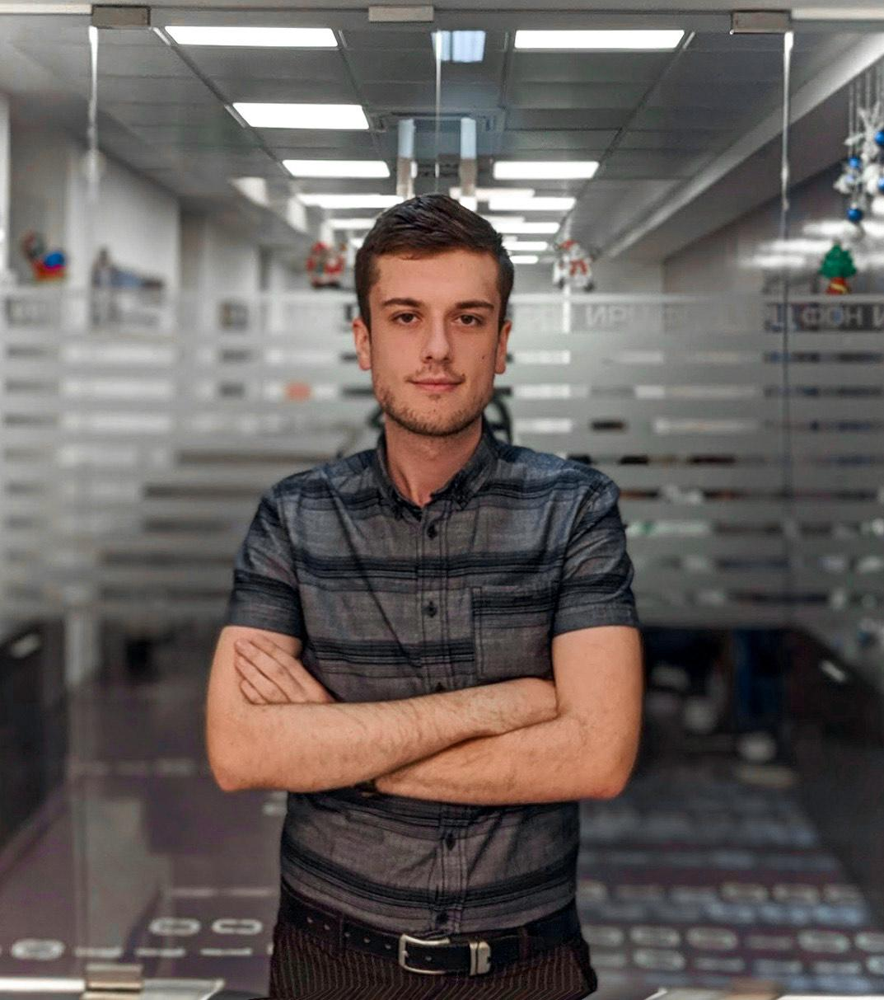

Osnivac 1

Andjela Basara
Osnivac 2
Vitosevic Jovan
Osnivac 3

Nina Veljkovic
Pre nego nastavimo ovaj tekst, bitno je da pojasnimo gdje se Sejšeli nalaze. U pitanju je grupa od čak 115 ostrva locirana u sred Indijskog okeana, na kojima živi oko 95,000 stanovnika, a službeno pripadaju Africi. Istorija ovog mesta priča o tome da su ostrva prvo bila pod vlašću Francuza, kasnije Britanaca, da bi svoju nezavisnost dobila 1976. godine, te su upravo iz ovog razloga, francuski i engleski službeni jezici zemlje, uz kreolski. Najveća ostrva su Mahe (na kojem se nalazi i glavni grad Viktorija), La Dig i Pralin, te gotovo svi turisti idu na jedno od ova tri ostrva. Svako od njih predivno je na svoj način, sa svojim specifičnostima i zanimljivostima.
Mahe je najveće ostrvo Sejšela, na kojem se nalazi aerodrom, kao i glavni grad Viktorija. Možda niste znali, ali Viktorija je i najmanji glavni grad na svijetu, u kojem se nalazi nekoliko zanimljivih stvari koje bi trebao obići. Najviše nas je odusevio Tempio Hindu, jedini Hindu hram na ostrvu koji izgleda zaista moćno.
Bali je malo prelepo ostrvo deo Indonežanskog arhipelaga. Poseduje prelepu panoramu i jedinstvenu kulturu koja ovo ostrvo čini ekskluzivnim u odnosu na druga ostrva. Tropsko ostrvo iz snova. Bali ima mnoštvo zanimljivih mesta beskonačna polja pirinča, prelepe panorame, vulkane, raznovrsne turističke aktivnosti kao i atrakcije.
Andjela Basara
Vitosevic Jovan
Nina Veljkovic